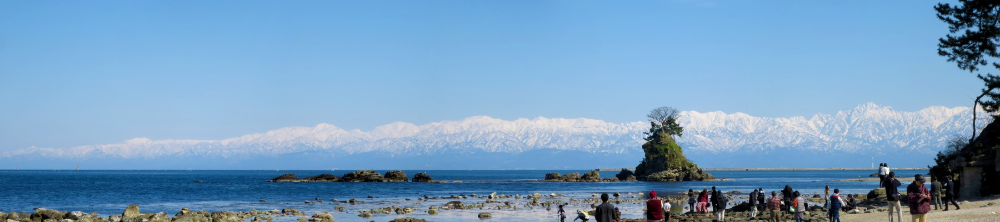
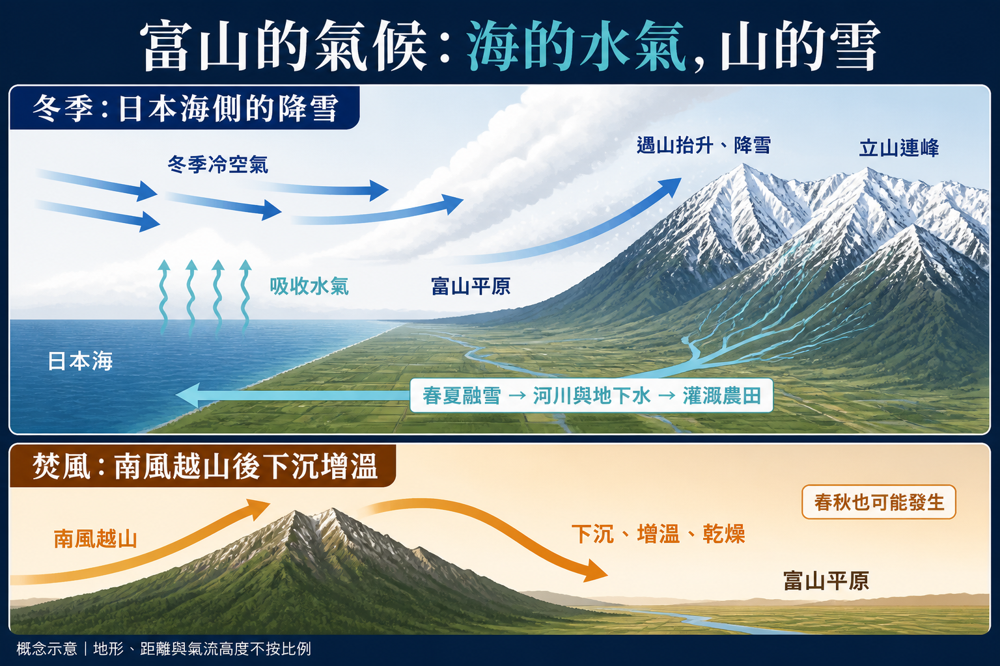
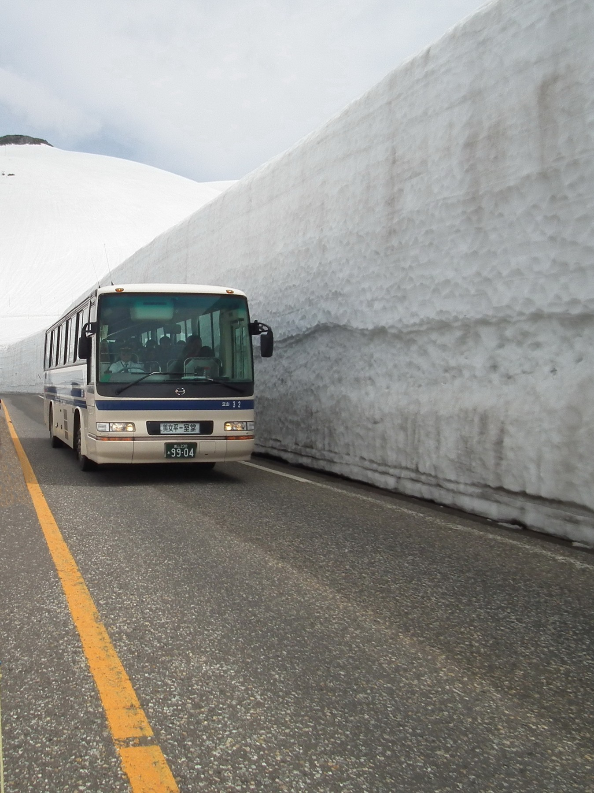
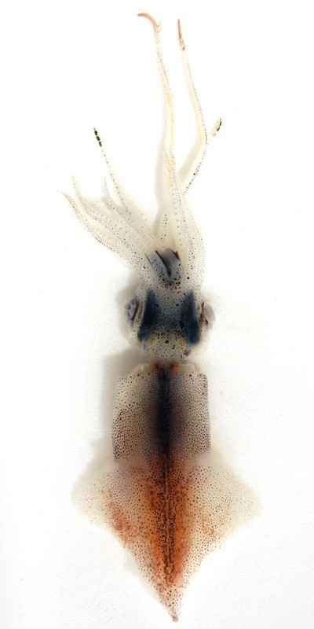
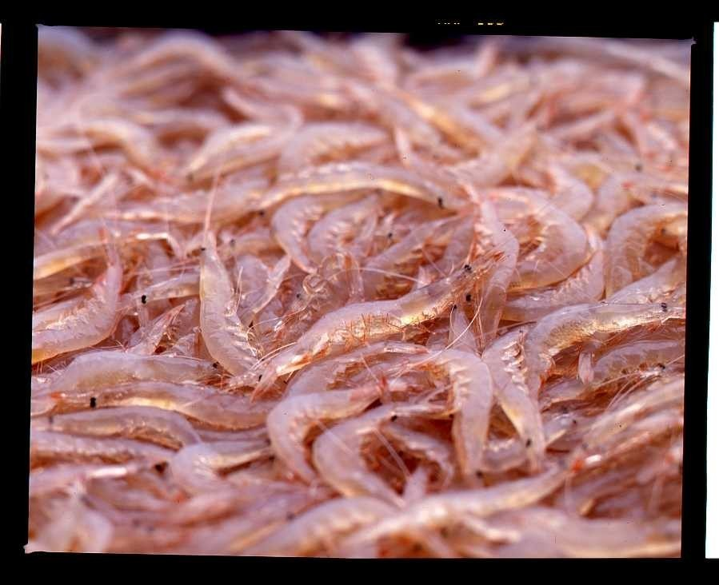
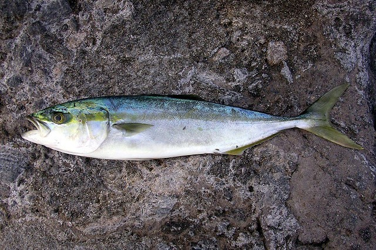
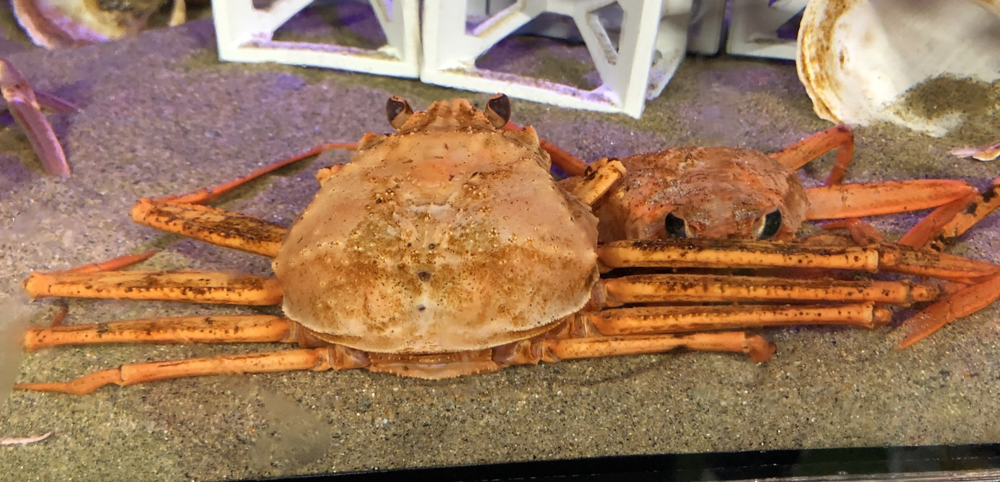
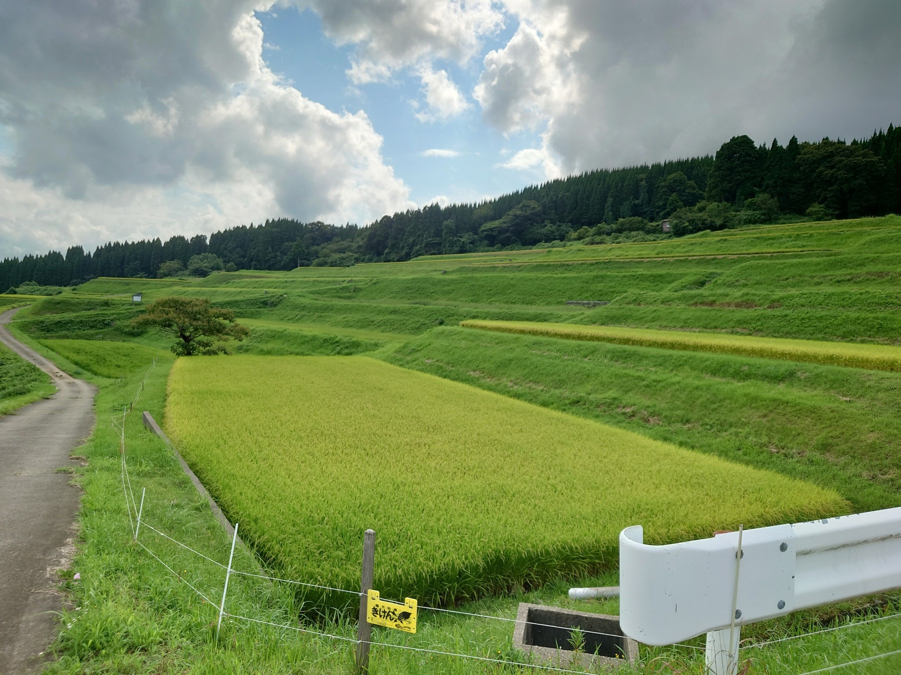
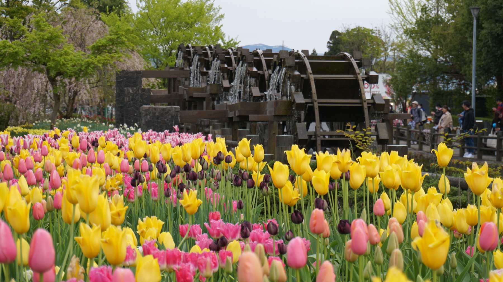

冷空氣，把海的水氣帶上山
冬季季風越過較暖的日本海，吸收水氣，遇山地抬升後形成降雪。到了春夏，融雪補給河川，也支撐灌溉。
從立山連峰的雪，到平原的米與深海的魚。
沿著水的方向，讀懂富山灣的風土。

冬季積雪蓄水，春夏融雪穿過河川與扇狀地。水一邊灌溉農田，一邊連接沿岸生態。
左右滑動剖面，從高山看到深海。
冬季冷空氣越過日本海吸收水氣，遇到山地抬升形成降雪。高山積雪在春夏逐步融化，把水送往下游。
典型的日本海側氣候，冬季雨雪豐富，夏季炎熱潮溼。城市的氣溫平年值，不能當作高山的氣候。

上圖：冬季降雪與春夏融雪。下圖：焚風形成機制。AI 繪製的教學概念圖，地形、距離與氣流高度不按比例；非實景照片。
氣候機制參考：富山地方氣象台。

月份 1–12；長條與圓點使用不同刻度。資料：日本氣象廳，富山站 1991–2020 平年值。
| 月份 | 降水量 mm | 平均氣溫 °C |
|---|---|---|
| 1月 | 259.0 | 3.0 |
| 2月 | 171.7 | 3.4 |
| 3月 | 164.6 | 6.9 |
| 4月 | 134.5 | 12.3 |
| 5月 | 122.8 | 17.5 |
| 6月 | 172.6 | 21.4 |
| 7月 | 245.6 | 25.5 |
| 8月 | 207.0 | 26.9 |
| 9月 | 218.1 | 22.8 |
| 10月 | 171.9 | 17.0 |
| 11月 | 224.8 | 11.2 |
| 12月 | 281.6 | 5.7 |
冬季季風越過較暖的日本海，吸收水氣，遇山地抬升後形成降雪。到了春夏，融雪補給河川，也支撐灌溉。
強南風越過山脈後，下沉增溫、乾燥。焚風不限於夏季，春秋也值得留意；高溫對水稻品質是重要挑戰。
日本海北部的波浪可化為長週期湧浪南下，受灣內海底地形影響形成「寄り回り波」，有時在當地風弱後突然到岸。
氣候機制與特殊天氣：富山地方氣象台。
與其只想成暖流與寒流交會，更適合把富山灣理解為沿岸淡水影響、暖流系水與低溫深層水的疊合。
河川淡水影響，鹽度較低；陸源物質在此與海洋相遇。
由對馬海峽進入日本海的暖流系水，影響上層海況與洄游魚的分布。
全年約 2°C 以下、鹽度穩定、營養鹽豐富。深水棲地與海底谷接近海岸。
白蝦利用海底谷，官方觀光資料介紹常見棲地約 150–300 m。因此「海底谷物種」不等於「全部住在 300 m 以下」。
分層：富山縣；白蝦棲地：富山觀光官方白蝦專題。局部混合與營養鹽輸送可能參與生產力形成，不能把整灣視為持續均勻湧升。
春季接近沿岸的螢烏賊、海底谷的白蝦、冬季洄游的鰤魚，以及深水的紅楚蟹，各自說著不同的海洋故事。

螢烏賊物種參考照片，非海面發光實景。
春季成熟群體夜間接近沿岸，產卵與垂直移動的習性，連接深水棲地和近岸定置網漁場。新湊官方介紹當地漁期為 3–5 月。

白蝦實物照片。
半透明的淡粉色身軀，是「富山灣的寶石」稱號的由來。常見於約 150–300 m 海底谷；刺身、壽司與酥炸料理都是代表吃法。

鰤魚物種參考，照片攝於東京，非富山水揚。
日本海的鰤魚群在秋冬南下，富山灣與氷見成為著名漁場。寒鰤著重冬季脂肪豐富的魚貨；全年漁獲與品牌認定並非同一概念。

水族館的紅雪蟹物種參考，非捕撈現場。
棲息於數百公尺以上的深水海域。深水漁場距港口近，是富山強調鮮度的條件之一。富山市介紹的賞味季節以秋冬為主。
鰤、鰺、鯖、沙丁魚、鰆與部分魷魚，受季節洄游及上層海況影響。
白蝦、紅楚蟹、甘蝦、鱈魚、げんげ等，各有不同深度與棲地需求。
螢烏賊、櫻鱒、真鯛與比目魚等，提醒我們河川、沿岸與深水並非孤立。
物種與季節：富山市、射水市、富山官方自行車導覽。照片提供物種辨識，不代表當季供貨。
螢烏賊迎來主要漁季；白蝦漁從 4 月展開。山上的雪逐步融化，平原準備插秧。
代表季節示意，非即時漁況；漁期、賞味旬與餐廳供貨不同，且可能因海況與資源管理調整。
富山平原、黑部扇狀地、砺波平原與呉羽丘陵，依灌溉、土壤和排水條件發展不同作物。

融雪與河川提供灌溉條件，水稻是農業核心。代表品種有コシヒカリ、富富富、てんたかく與てんこもり。
富富富以耐高溫、稻株較短而不易倒伏等特性，回應稻作面對的環境挑戰。
認識富富富
低平地與水利系統，支撐稻作。
呉羽丘陵水田灌溉不便、土地易排水，從明治時期發展梨園。閱讀官方介紹
| 類別 | 代表物產 | 風土與栽培重點 |
|---|---|---|
| 米 | コシヒカリ、富富富、てんたかく、てんこもり | 平原、灌溉水利與品種育成 |
| 蔬菜 | 富山白蔥、里芋、洋蔥、菠菜、枝豆 | 平原耕作、水田轉作與在地產區 |
| 水果 | 呉羽梨、加積蘋果、柿／富山干柿、無花果、桃 | 丘陵與扇狀地各有適合的作物 |
| 花卉 | 鬱金香球根 | 砺波代表的球根生產產業 |
| 其他 | 蕎麥、薏仁、番茄、西瓜 | 各地特色產區與多樣栽培 |
物產列表依提供的研究稿整理；稻米、呉羽梨與球根產業另附官方資料。原稿的 2025 年球根出貨數字未納入網頁，避免混用不同年度口徑。
這是風土的概念整合，並非每種魚都直接由融雪增加，也不是所有農作物只靠雪水。光照、水體混合、資源量、水利與栽培管理，同樣參與其中。
從 3,000 公尺高山，
一路延伸到 1,000 公尺深海。農田與漁場，是同一套山海系統的兩種結果。
以提供的研究稿為骨架，補核對氣候、水層、白蝦棲地與代表賞味季節。圖表是教學示意，非導航或即時海況資料。
內容整理基礎：〈富山灣氣候洋流與物產研究.md〉。官方資料核對日期：2026 年 10 月 2 日。原稿未提供來源的精確魚種總數、灣面積與年度球根出貨統計，未作為網站重點數據；原稿仍可下載閱讀。
下載原始研究 Markdown照片來自 Wikimedia Commons；縮放、壓縮並依版面裁切顯示。各照片及其改作沿用下列授權，網站其餘文字與版面不因此自動套用同一授權。